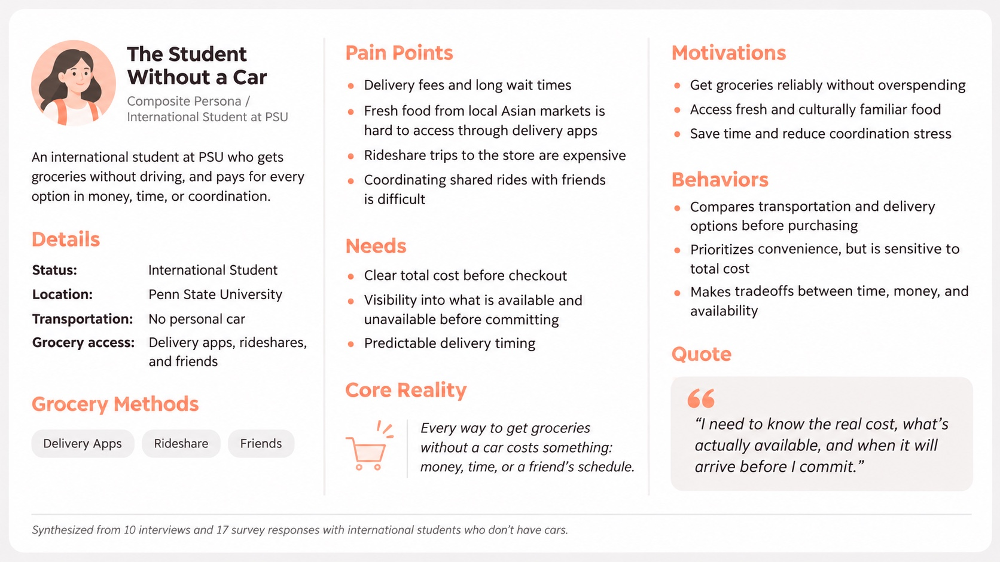
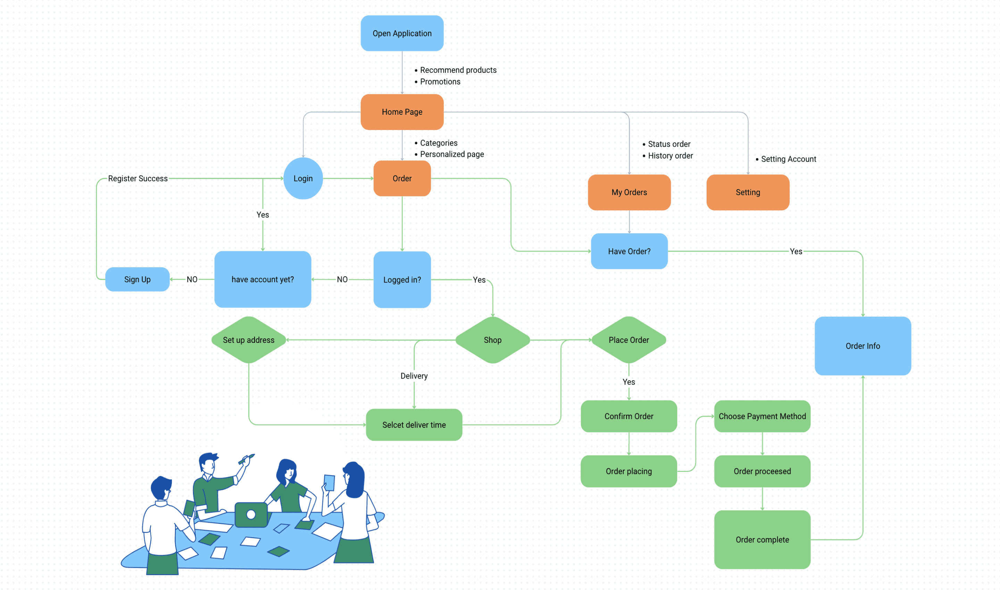
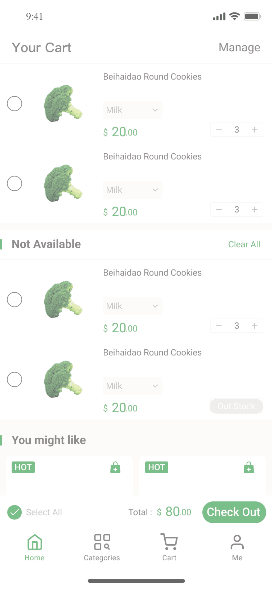
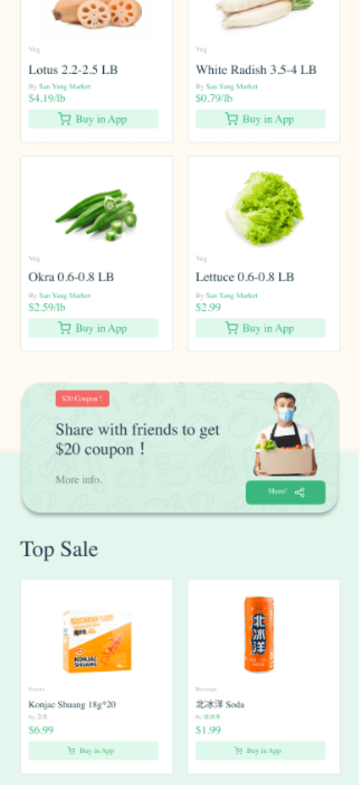
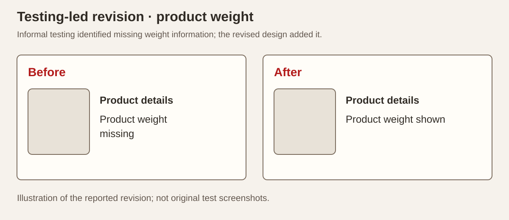

05 / ESIA · DESIGN INTERNSHIP
Grocery Delivery
Research-led onboarding-to-checkout flows for international students shopping without a car.

01 / OVERVIEW
Make the grocery trip predictable.
I researched grocery access and designed mobile and web shopping flows for international students at Penn State who do not have cars.
Esia was an early-stage grocery delivery startup. My work connected onboarding, product information, cart, and checkout around cost, availability, and delivery expectations.
02 / PROBLEM / USER CHALLENGE
Every alternative to driving has a cost.
I gathered 17 survey responses and interviewed 10 international students, recruited through group chats and email. Eight interviewees raised delivery fees and long waits.
Other concerns included access to local Asian groceries, rideshare costs, and coordinating rides with friends. The problem was uncertainty across the whole trip, not just checkout speed.
Synthesis → design priorities
The composite persona translated these trade-offs into three priorities: visible total cost, clear product availability, and a delivery expectation before committing.

03 / SOLUTION
Carry the right information through the purchase.
Map before styling
I mapped search through checkout, then explored wireframes to place fees, availability, and timing where shoppers need them. The structure also left room for more stores.

Keep availability actionable
Product information supports comparison; unavailable cart items sit in a separate “Not Available” group so shoppers can distinguish them from purchasable items.


Adapt the journey across devices
The web design carries the same navigation and purchase sequence into a wider layout.

04 / IMPACT / OUTCOME
Informal testing exposed missing product details.
A small informal test revealed missing information, including product weight. I added the missing details; the revised design was released and ran for a period.
Deliverables included survey and interview synthesis, a composite persona, a user flow, wireframes, and mobile and web designs. No post-launch metrics are available.

05 / OPPORTUNITIES / TARGET USERS
Validate the difficult shopping trip.
The primary audience is international students without cars, especially those balancing delivery fees, familiar food, and limited transport options.
Next, test a fixed shopping task with an unavailable item and a strict budget. Check whether shoppers understand the final cost and can recover when their first choice is missing.
06 / REFLECTION
Predictability matters more than a faster checkout.
Research shifted my focus from transaction speed to the decisions leading up to purchase. Availability, cost, and timing need to stay visible together.
Recruitment through personal networks and informal testing limit the evidence. A broader task-based study with the same target group would strengthen the next iteration.